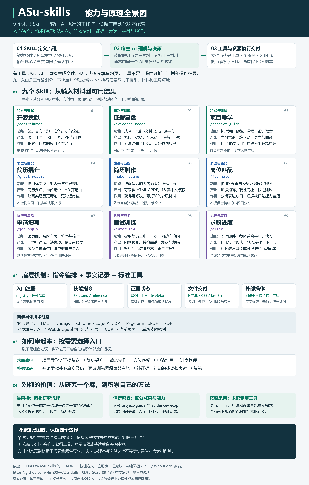

九个入口，组织的是工作流
Skill 定义何时介入、需要什么材料、按什么步骤处理、交付什么，以及何时确认。通常由同一个宿主 AI 按任务加载不同规则；九个入口不等于九个独立智能体。
ASu-skills 将中文求职经验组织成九个 AI 技能入口，结合证据账本、网页简历模板和浏览器桥接脚本，覆盖经历梳理、简历制作、岗位判断、申请填写、面试训练与进度管理。
核心价值在任务拆解、事实约束与工具整合。阅读规则、理解经历、判断匹配和追问回答主要由宿主大模型完成；模板编辑、资源合并、PDF 导出和浏览器命令传输有具体代码支撑。
Skill 定义何时介入、需要什么材料、按什么步骤处理、交付什么，以及何时确认。通常由同一个宿主 AI 按任务加载不同规则；九个入口不等于九个独立智能体。
用户提供目标和事实，AI 阅读技能与参考材料，再借助可用工具执行。有工具时可以生成文件、修改代码或填写网页；工具不足时更多提供分析、计划与操作指导。
价值集中在求职任务拆解、证据边界、共享事实与制品交付。语义理解和判断依赖宿主模型；模板编辑、PDF 导出和浏览器命令转发有独立代码支持。
展开查看所需材料、处理方法、交付结果和运行边界。
核查项目维护情况、贡献规则与 issue/PR 重复风险，在独立分支准备范围清晰的修改及验证。
按问题背景、方案决策、个人动作、交付状态、落地范围、效果证据、个人边界、待补证据、面试追问九部分还原经历。
先设计源码学习大纲，再按需展开课程与练习；求职场景下整理源码阅读路线、技术亮点、取舍与口播。
重组岗位定位、项目要点与成果表达，准备 HR 开场白，并标记尚未确认的事实。
使用默认 ASu 模板或指定模板，合并共享样式、工具栏与编辑脚本，检查 A4 排版并导出。
把要求拆为硬性条件、核心能力和加分项，逐项查找证据，并区分已匹配、表达缺口、证据不足、真实缺口和待确认。
读取可见页面结构，建立字段映射，执行文本填写、选项选择和附件上传，并重新读取核对。
提取职责、指标、技术、架构和结果主张；约定问题与评分依据，一次一问，动态追问并记录证据。
从入口注册到网页操作，分清规则、模型与代码各自负责什么。
让宿主找到正确的技能
skills.registry.json 维护入口清单，配套同步脚本生成和核对平台清单。不同平台共用 skills、assets、references。仓库还包含 DeepSeek Harness 的接入代码：通过文件系统技能提供器挂载 skills 目录。
把经验写成可执行流程
SKILL.md 用元数据描述名称与触发条件，正文规定输入、步骤、输出和边界；更细的规则拆到 references 中，按任务需要读取。执行次序和语义判断主要由宿主大模型解释完成。
跨环节复用同一份证据
JSON 主张—证据账本保存原始事实、候选表述、来源、责任范围、确认状态、适用场景和边界。面试另用会话账本记录回答证据与待复练项目。它们是可检查的记录结构，可信度取决于材料和核验过程。
把分析变成可继续编辑的文件
简历用 HTML/CSS 排版，原生 JavaScript 和 contenteditable 支持编辑；公共样式、工具栏与编辑器由脚本内联。PDF 脚本通过 Node.js 原生 fetch/WebSocket 连接系统浏览器的 CDP，等待字体后调用 Page.printToPDF。
将模型选择的动作送入浏览器
kimi-webbridge.mjs 是本机 HTTP 客户端：检查 /status，向 /command 发送包含 action、args、session 的 JSON。扩展与本机服务负责连接浏览器；模型根据页面快照选择操作，再通过读取结果验证。客户端限制连接到回环地址，但它本身不负责核验用户是否确认提交。
以下是按职责整理的组合建议，不代表后台自动依次执行。
先理解源码并还原个人贡献，再形成岗位相关的表达与简历文件，最后对照具体 JD 决定是否申请。材料已充分时，可跳过前两步。
先检查岗位要求和缺失资料，再填写并核对一个明确职位。实际提交状态确认后，将结果交给进度管理。步骤之间不自动继承外部操作授权。
先模拟追问暴露问题，再补证据或调整过强表述，最后用变体题复练。流程中的每一步都围绕可解释的事实。
完成范围清晰的真实贡献，记录提交、评审与合并状态，再将个人贡献转成求职材料。不能提前把计划或未合并 PR 写成已采用成果。
以下判断基于本次交流中“研究仓库、追问原理、沉淀文档与网页”的实际需求，不假设用户的职业或求职状态。
把“项目定位 → 能力 → 原理 → 依赖 → 边界 → 文档与 Web”固定成检查框架。分析下一个开源库时，复用研究标准和交付方式。
借鉴 project-guide 与 evidence-recap，分别记录自己提出的问题、作出的选择、AI 完成的工作及验证结果。做出一个产品和能解释其实现，需要分别确认。
简历提升、岗位匹配、申请填写和面试训练在明确求职需求时更有直接价值。当前材料不足以判断个人适合的岗位或求职效果。
本次案例：用户提出研究目标、追问 Skill 的本质并要求图文沉淀；AI 阅读资料、组织分析并制作网页。网页交互与静态资源可验证，但这不能推导出上游插件已实测或个人已掌握其全部实现。
下载理解与应用笔记下面是基于已读实现与技能定义的分析，运行效果仍需在具体环境验证。
不编造经历、填写前确认、提交前确认等主要体现在技能指令中。已读桥接代码有回环地址限制与参数校验，但没有独立的“用户已批准”凭证检查。实际约束还取决于宿主权限与模型遵循情况。
判断依据 ↗纯文本分析依赖模型；代码贡献依赖仓库与 GitHub 工具；网页填写依赖浏览器连接。注册表明确排除了 WorkBuddy 桥接中的 job-apply，因为纯技能目录桥接不提供它所需的完整执行环境。
判断依据 ↗WebBridge 客户端仅访问本机服务，浏览器登录会话保留在本机；但供模型理解的页面或简历内容是否发送给云端，取决于宿主模型及工具的数据处理方式。不能据此推断整个求职流程都离线。
判断依据 ↗账本能保留来源和冲突，无法自行保证原始材料真实。岗位匹配建议与面试反馈是基于可见材料的模型判断，不能据此推断录用概率或保证面试结果。
判断依据 ↗本项目核对了说明和关键实现，没有安装上游插件、运行上游测试、导出真实简历或实测招聘网站；浏览器稳定性、排版兼容性和各宿主行为仍需在具体环境验证。
判断依据 ↗九个 Skill 的功能、产出与作用，以及技术链路、使用流程和价值判断。点击图片可查看高清原图。

本次研究读取的关键文件。链接指向 main 分支，内容可能随上游更新。
项目定位、九项能力、模板说明、支持平台与整体流程
入口注册、清单生成与 WorkBuddy 的能力排除项
Node.js 要求、构建/验证/测试命令与插件声明
DeepSeek Harness 文件系统技能提供器的挂载
JD 拆解、五种匹配状态与解释性结论
四种面试模式、主张分类与追问停止条件
页面快照、字段映射、操作核对与确认规则
模板壳、共享资源合并和打印检查流程
状态更新依据、进度表与邮箱处理要求
原始事实、来源、个人范围与确认状态的数据结构
可编辑文字、字体、照片替换、HTML 保存和打印
系统 Chrome/Edge、WebSocket/CDP 与 Page.printToPDF
回环地址约束、状态查询及 JSON 命令转发
{kind=link}
{kind=link}